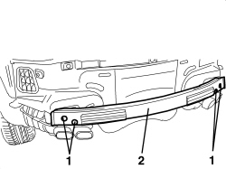

7210B82 R.R REAR CROSSMEMBER
- Path
- Procedures > 72 PANELS AND FRAMES > 7210 REMOVING-REFITTING > 7210B STRUCTURAL ELEMENTS (CENTRE AND REAR SECTION) > 7210B82 R.R REAR CROSSMEMBER
- Kind
- repair procedure (removal / refitting; the operation number is the code)
- Applies to
- all engines; all production periods
- Interactive page
- https://sloeber94.github.io/elrnDB-aBrrSpdr/en/#/946002731
Applies to: all engines; all production periods
 Removing
Removing
 Refitting
Refitting- Remove both rear light clusters.
Op. 5540A44 REAR LIGHT CLUSTER (ONE), LEFT OR RIGHT - R.R.
1. Undo the bolts.
2. Remove the sacrificial crossmember.

Applies to: all engines; all production periods
Refitting
Removing- Check that the crossmember is not damaged.
- Position the crossmember.
- Tighten the bolts.